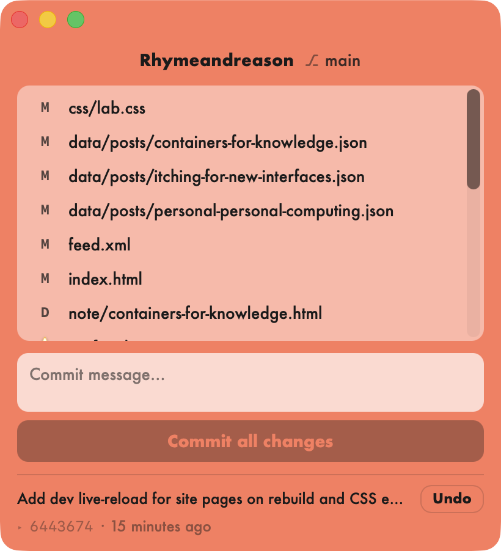

Git Helper
V.1.0
I've used Github Desktop for a long time. But it only gives you one window, and it doesn't shrink below a certain size. So I made my own Git helper, which is much smaller and simpler. It just has pending commits, the button to "commit all", and the last commit. Clicking a file opens it in the Code Editor.
The bright colors are set per project. It's my favorite feature. I can see what Project I'm in right away.